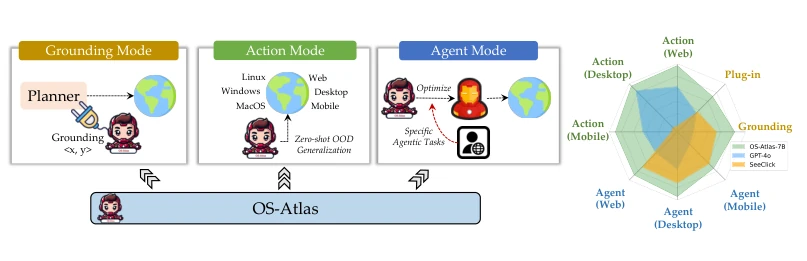
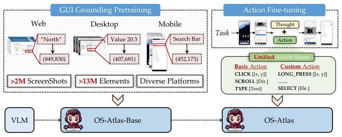
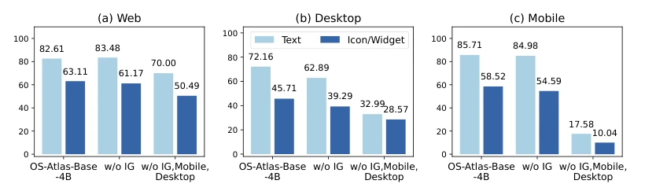
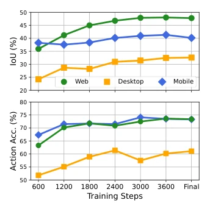
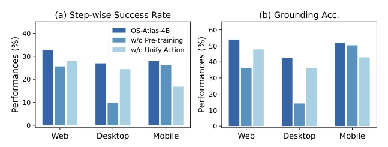
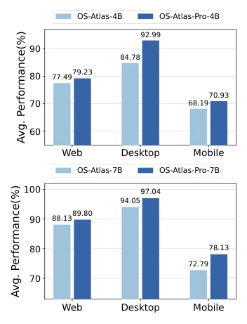
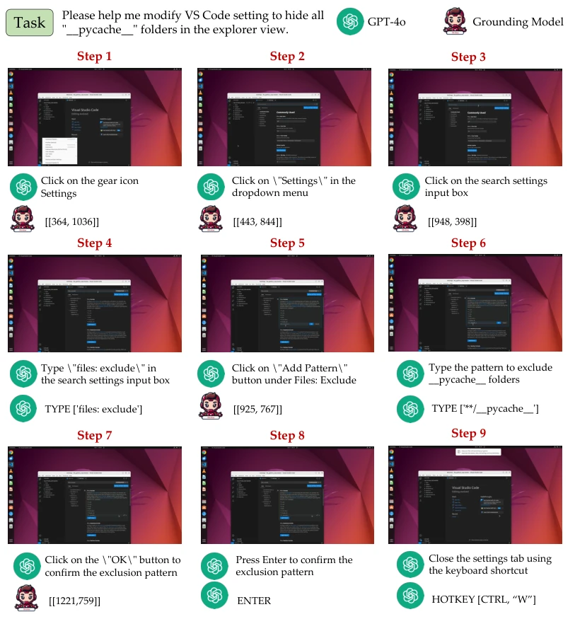

OS-Atlas attempts to construct a 'generalist' in the GUI realm using massive data. This approach indeed works in the VLM era, but also reveals a strong 'data hunger syndrome'. They developed a cross-platform data synthesis tool, claiming 13 million elements, this scale is indeed enviable, as previously everyone could only stare at web screenshots, with desktop data being even scarcer. However, using GPT-4o to synthesize instruction data, does this count as 'using magic to defeat magic'? If GPT-4o is wrong, the model errs along with it, will generalization be compromised? Although they topped the leaderboard on ScreenSpot, desktop data still relies on physical machine collection, the cost is not low, and it is difficult to replicate on a large scale. Overall, the ambition to open-source an alternative to GPT-4o is great, but it is still far from a true 'Jarvis', especially in complex task planning, where it still relies on external Planner assistance; the model itself is more like a precise 'mouse hand'.
研究动机Motivation
现有 GUI Agent 严重依赖闭源 VLM（如 GPT-4o），开源模型在 GUI grounding 和 OOD 场景表现不佳 (Lu et al., 2024b; Chai et al., 2024)。现有数据集多集中于 Web，缺乏跨平台（Windows, Mac, Linux）数据，且存在动作命名冲突（如 mobile 的 tap 与 desktop 的 click）(Zhang et al., 2024c)。此外，现有数据质量参差不齐，存在大量噪声 (Cheng et al., 2024)。这导致模型难以泛化到未见过的界面，限制了实际应用。OS-Atlas 旨在解决数据匮乏和动作空间不一致问题，构建通用的基础动作模型，降低对闭源模型的依赖。
Existing GUI Agents heavily rely on closed-source VLMs (e.g., GPT-4o), and open-source models perform poorly in GUI grounding and OOD scenarios (Lu et al., 2024b; Chai et al., 2024). Existing datasets mostly focus on Web, lacking cross-platform (Windows, Mac, Linux) data, and there exist action naming conflicts (e.g., mobile tap vs desktop click) (Zhang et al., 2024c). Furthermore, existing data quality varies, containing a large amount of noise (Cheng et al., 2024). This leads to models struggling to generalize to unseen interfaces, limiting practical application. OS-Atlas aims to solve data scarcity and action space inconsistency problems, build a universal base action model, and reduce reliance on closed-source models.

Figure 1: (Left) The OS-Atlas model operates in three distinct modes to cater to various research needs. In Grounding mode, OS-Atlas predicts element coordinates based on user instructions and can be integrated with a planner module to create a complete agent. In Action mode, OS-Atlas functions independently to solve step-level agent tasks universally across different platforms and applications, even in zero-shot OOD scenarios. In Agent mode, OS-Atlas undergoes further supervised fine-tuning to address specific agent tasks. (Right) Overall performance comparisons between OS-Atlas and other state-of-the-art models.
Training is divided into two stages: GUI Grounding Pre-training and Action Fine-tuning. Pre-training uses 13 million grounding data to enable the model to learn element localization. Action Fine-tuning uses agent data to train action prediction. Innovations include: 1. Cross-platform data synthesis tool, covering Web, Android, Windows, etc., Web data via crawler plus rule filtering, desktop side uses A11y tree collection; 2. Unified Action Space, standardizing actions across different platforms (e.g., click, type, scroll), solving naming conflicts, reducing action types from 17 to 10; 3. Base action + custom action design, enhancing OOD capability.

Figure 2: Overall training pipeline of OS-Atlas. We first perform large-scale pre-training using 13 million GUI grounding data collected to build OS-Atlas-Base. Next, we conduct multitask fine-tuning on agent data, resulting in OS-Atlas.
Tested on 6 benchmarks (ScreenSpot, OSWorld, OmniAct, etc.). Grounding tasks use Accuracy and IoU, Agent tasks use Type, Grounding, SR. Results show OS-Atlas-7B surpasses SeeClick and CogAgent on ScreenSpot, zero-shot OOD performance close to GPT-4o. On OSWorld, with GPT-4o planning, success rate significantly improved. Ablation studies show that unified action space and data expansion significantly boost performance. Desktop data, though small, is effective, proving the importance of cross-platform pre-training.

Figure 4: Ablation studies and performance on ScreenSpot. IG/Mobile/Desktop refers to instruction grounding, mobile, and desktop grounding data, respectively.

Figure 3: The effect of grounding data scaling on two metrics. The performances on three different domains are reported.

Figure 5: Ablation studies on the zero-shot OOD setting. The results are reported respectively across three platforms.

Figure 6: OS-Atlas-Pro evaluation results.
其他图片Other Figures

Figure 7: A case study from OS-World. OS-Atlas-Base works in the grounding mode, integrating GPT-4o as a task planner to create an agent. For each Click step, OS-Atlas-Base outputs the coordinates based on the provided step-level instructions.